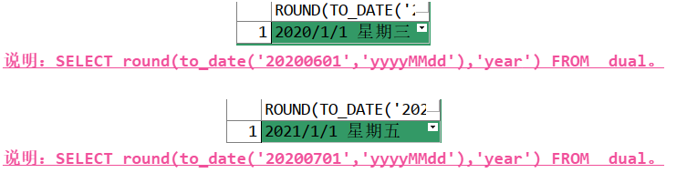

Oracle–学习笔记(包含Oracle视频)
Lesson1 Oracle概述
NO1.1 Oracle简介
Oracle数据库是相对于其他数据库来说比较难的一个。
- Oracle Database：
- 介绍：又名Oracle RDBMS，简称Oracle，是甲骨文公司推出的一款关系数据库管理系统。Oracle数据库系统是目前世界上流行的关系数据库管理系统。Oracle是一种高效率、可靠性好的、适应高吞吐量的数据库解决方案。
- Oracle的特点：
- 支持多用户、大事务量的事务处理；
- 数据安全性和完整性控制；
- 支持分布式数据处理；
- 可移植性。
NO1.2 Oracle服务端、客户端和PL/SQL Developer的安装
Oracle的服务端和客户端、PL/SQL Developer的都要统一，我这里是三个软件都是64位的。
安装包版本：
- 64位Oracle 11g；
- 64位Oracle 11g Client；
- 64位PL/SQL Development 14。
Oracle服务端安装步骤中，需要注意几个地方：
下载下来的64位Oracle 11g，有两个文件压缩包，必须同时进行解压，不要单独解压某一个压缩包(我就是单独解压1，没解压2，就直接安装了…粗心)；解压完成后，点击database文件夹，双击setup.exe安装程序即可；
安装步骤如下列所示；

Oracle客户端安装步骤中，需要注意几个地方：
两个需要注意的地方：
Oracle客户端安装完成后，需要进行两个配置：
首先，配置监听服务文件。监听服务文件在Oracle客户端安装目录下的network/admin/tnsnames.ora。以记事本的方式打开admin目录下的tnsnames.ora，删除全部内容，并按照下面的格式想里面写入网络服务名、传输协议、IP地址、端口和数据库名；
注意：新安装的客户端如果没有配置过监听，admin目录下可能没有tnsnames.ora这个文件，可以手动创建文本文档，文件名改为tnsnames，后缀改为ora。ORCL = (DESCRIPTION = (ADDRESS_LIST = (ADDRESS = (PROTOCOL = TCP)(HOST = 127.0.0.1)(PORT = 1521)) ) (CONNECT_DATA = (SERVICE_NAME = orcl) ) ) 说明：配置简介 一、ORCL是一个别名，你叫啥都行，你自己认识就行； 二、HOST就是你要连接的Oracle服务端IP地址，如果是本机，就写127.0.0.1就行； 三、PORT则是你要连接的Oracle服务端的端口号，一般都为1521； 四、SERVICE_NAME是填你在安装Oracle服务端时，给Oracle服务端取得实例名，简单讲就是告诉Oracle客户端要监听的是哪个Oracle数据库，虽然电脑上只有一个Oracle数据库，但是还是要这么做； 五、其他的一般默认就可以了。然后，配置监听器。监听器文件在Oracle客户端安装目录下的network/admin/listener.ora。以记事本的方式打开admin目录下的listener.ora，删除全部内容，并按照下面的格式想里面写入网络服务名、传输协议、IP地址、端口和数据库名；
注意：新安装的客户端如果没有配置过监听，admin目录下可能没有listener.ora这个文件，可以手动创建文本文档，文件名改为listener，后缀改为ora。LISTENER = (DESCRIPTION_LIST = (DESCRIPTION = (ADDRESS = (PROTOCOL = TCP)(HOST = 127.0.0.1)(PORT = 1521)) (ADDRESS = (PROTOCOL = IPC)(KEY = EXTPROC1521)) ) ) ADR_BASE_LISTENER = E:\orcl_cli64 说明：配置简介 一、HOST，这个不用说了吧，和上面配置监听服务的配置差不多； 二、PORT一般都为1521； 三、ADR_BASE_LISTENER，这个改成你客户端的最外层的安装目录就行。
PL/SQL Developer的安装，这个安装程序没有太多需要注意的，按照正常安装软件的步骤来即可，但是在安装完成后需要配置一下。
打开PL/SQL，然后取消登录，随后会进入主界面，在上方的菜单栏中找到Preferences选项，出现如下对话框后，只要把图中圈出来的地方配置好即可。
- Oracle的访问：
- 可以使用Bin目录下的sqlplus.exe访问Oracle，只不过是命令行形式的；
- 使用sql_developer来访问Oracle，这个也是Oracle里自带的；
- 使用PL/SQL Developer来访问Oracle。
Lesson2 Oracle基础
NO2.1 Oracle基础概念
Oracle和其他数据库不太一样，Oracle只有一个数据库(MySQL中就可以创建数据库，然后在指定数据库中创建表进行操作)，即全局只有一个数据库。
- 基本概念：
- 数据库实例：官方概念为实例是由一些内存和进程组成，这看的我一脸懵逼。我自己的理解为：我们安装的Oracle数据库，是一个超大型的数据库，里面有许多小型数据库；所谓的数据库实例，其实就是一把钥匙，一把能够打开某一个小型数据库的钥匙，所以才有了“一个实例只能打开一个数据库”的限制。一个数据库可以有多个实例，这不就相当于，这个超大型的Oracle数据库能够造许多小型的个人类型的oracle数据库，只有安装并配置了Oracle数据库，才能得到一个实例，也就是一把钥匙，用钥匙才能打开数据库；
- 表空间：用来存储物理表的这么一片空间，我又懵了….用名词解释名词….我的理解为：表空间是一个小型的数据库，然后在表空间里面可以放许多的表；数据库实例相当于一个MySQL，多个实例就等于是多个MySQL，而表空间就是在MySQL中建立了一个数据库的意思；
- 数据文件：即dbf，数据文件是数据库的物理存储单位。表面上Oracle数据库的数据是存储在表空间中，而实际上是存储在一个或多个数据文件中。一个表空间可以由一个或者多个数据文件组成，而一个数据文件只能属于一个表空间。一旦数据文件被放入一个表空间过后，就不能删除这个数据文件，如果要删除某个数据文件，则必须删除其所属的表空间。
NO2.2 创建表空间
创建表空间，其实就相当于我们在自己的MySQL中，创建一个数据库。
基本语法格式：
create tablespace 表空间名 datafile '数据文件名' size 表空间大小; 说明：表空间的创建 一、tablespace，后面跟的是要创建的表空间的名称； 二、datafile，后面跟的是这个表空间的表数据要放到哪个数据文件中，文件路径要带盘符； 三、size，表示这个数据文件要多大空间。 如： CREATE TABLESPACE myfirstts DATAFILE 'd:\myfirstts.dbf' SIZE 100m AUTOEXTEND ON //这个表示，如果数据文件满了，也就是满100m了，那么该文件就会自动扩容 NEXT 10m; //表示每次自动扩容10m
NO2.3 创建用户与授予权限
用户是建立在表空间的基础上，而表则是建立在用户的基础上。也就是说用户是属于一个表空间的，而以用户的身份进入之后，在表空间下创建的表，都属于这个用户。
创建用户：
基本语法格式：
create user 用户名 identified by 密码 default tablespace 表空间表; 说明：用户的创建 一、user，后面跟的是要创建的用户名称； 二、identified by，后面跟的是为该用户的设置的密码； 三、default tablespace，表示该用户属于哪个表空间。 如： CREATE USER dyf //用户名 IDENTIFIED BY dyf //用户密码 DEFAULT TABLESPACE myfirstts; //所属表空间
为新创建的用户赋予权限：
基本语法格式：
GRANT DBA TO 用户名; 说明：表示给指定的用户授予DBA的权限，也就是数据库管理员的权限。 如： GRANT DBA TO dyf; //这里的DBA是数据管理员的意思，也就是赋予数据管理员用于的权限
NO2.4 表的创建、修改、删除
首先，我们先学习一下Oracle中的数据类型。
- Oracle的数据类型：
- 字符型：
char：固定长度的字符型数据，最长2000字节；不够长度的用空格补齐；varchar2：可变长度的字符串，最长4000字节；这个是最常用的数据类型；nchar/nvarchar2：用来存储unicode字符集的定长/变长字符型数据，最长1000字节；long：大文本类型，用来存储变长的字符串，最长2G；raw：用来存储二进制，最大2G。
- 数值型：
number(p,s)：p表示数字最多38位，s表示小数点占几位；不指定长度时，默认是18；float：最多存储126位的二进制或38位的十进制的浮点数；
- 日期类型：
date：用来存储日期和时间，精确到秒；常用；timestamp：显示的日期比date更精确，精确到小数秒，还能够显示上午还是下午。
- 其他数据类型：
blob：存储二进制数据，最多可以存放4G；clob：存储字符串数据，最多可以存放4GB。
- 字符型：
表的创建：
基本语法格式：
CREATE TABLE 表名{ 字段名 数据类型(长度), 字段名 数据类型(长度), .... }; 如： CREATE TABLE t_owners( ID NUMBER PRIMARY KEY, NAME VARCHAR2(30), addressid NUMBER, housenumber VARCHAR2(30), watermeter VARCHAR2(30), adddate DATE, ownertypeid NUMBER );
表的修改：
给表添加新的字段。基本语法格式：
ALTER TABLE 表名 ADD(字段名 数据类型(长度) [默认值]....); 如：ALTER TABLE student ADD(courseid number(3));修改表的字段。基本语法格式：
ALTER TABLE 表名 MODIFY(字段名 数据类型(长度) [默认值]....); 如：ALTER TABLE student MODIFY(courseid varchar2(15));删除表的字段。基本语法格式：
ALTER TABLE 表名 DROP COLUMN 字段名1，字段名2....; 如：ALTER TABLE student DROP COLUMN courseid;
表的删除：
基本语法格式：
DROP TABLE 表名; 如：DROP TABLE student;
NO2.5 表数据的添加、修改、删除
对表数据的增删改查，是我们经常要接触的，尤其是查询，使用频率更高。
插入数据：
基本语法格式：
INSERT INTO 表名(字段1,字段2....) VALUES(值1,值2....); COMMIT; 如： INSERT INTO t_ownertype(ID,NAME) VALUES(1,'邓先森'); COMMIT; 注意：在Oracle中插入数据之后，需要额外的执行事务提交，才能将数据插入到指定表中。
删除数据：
基本语法格式：
DELETE FROM 表名 WHERE 条件; COMMIT; 如： delete FROM t_ownertype WHERE ID =1; COMMIT; 注意：在Oracle中删除数据时，需要额外的执行事务提交，才能将数删除。 //-------------------------------------------------- 拓展：另一种删除表数据的方法 一、格式：TRUNCATE TABLE 表名; 二、这种删除表数据的方式，是将表中所有数据都删除，并重建了表结构。
修改数据：
基本语法格式：
UPDATE 表名 SET 字段1=值1,字段2=值2....where 条件; commit; 如： UPDATE t_ownertype SET NAME = 'dyf' WHERE ID=1; COMMIT; 注意：在Oracle中修改数据之后，需要额外的执行事务提交，才能将数修改；且如果需要修改列的属性，那么需要先将列中的值都设置为NULL后，才允许修改列属性。
NO2.6 使用JDBC连接Oracle数据库
使用JDBC连接Oracle，除了URL稍微需要修改一下，其他和使用JDBC连接MySQL步骤是一样的。
使用JDBC连接Oracle。
import java.sql.Connection; import java.sql.DriverManager; import java.sql.PreparedStatement; import java.sql.ResultSet; import java.sql.SQLException; public class DBUtils { public static Connection getConnection(){ Connection conn=null; try { String url="jdbc:oracle:thin:@127.0.0.1:1521:orcl"; String user="dyf"; String password="dyf"; Class.forName("oracle.jdbc.driver.OracleDriver"); //加载数据驱动 conn = DriverManager.getConnection(url, user, password); // 连接数据库 } catch (ClassNotFoundException e) { e.printStackTrace(); System.out.println("加载数据库驱动失败"); }catch(Exception e){ e.printStackTrace(); System.out.println("连接数据库失败"); } return conn; } public static void close(Connection conn, PreparedStatement ps, ResultSet rs){ try { if(rs!=null){ rs.close(); } } catch (SQLException e) { e.printStackTrace(); } try { if(ps!=null){ ps.close(); } } catch (SQLException e) { e.printStackTrace(); } try { if(conn!=null){ conn.close(); } } catch (SQLException e) { e.printStackTrace(); } } } 注意：oci连接必须在本机上安装oracle客户端才能连接；而thin就不需要，因此从使用上来讲thin还是更加方便，这也道是thin比较常见的原因。
NO2.7 Oracle数据的导入与导出
在Oracle中，导入导出数据的方法有两种，一种是使用cmd命令行的形式导入导出数据，另一种是使用PL/SQL工具导入导出数据。
使用cmd命令行的形式导入导出数据：
- 第一种：使用cmd命令行整库导入导出数据；
- 整库导出：exp 管理员账号/密码 full=y，其中参数full表示整库导出。导出后会在当前目录下生成一个EXPDAT.DMP的文件，此文件为备份文件。如果想导出数据到指定位置，并且取个名字，需要添加file参数。如，exp system/123456 file=C:\person.dmp full=y；
- 整库导入：imp 管理员账号/密码 full=y。如，imp system/123456 file=C:\person.dmp full=y。
- 第二种：使用cmd命令按用户导出导入；
- 用户导出：exp 指定用户账号/密码 owner=用户名 file=文件路径；
- 按用户导入：imp 指定用户账号/密码 file=文件路径 fromuser=用户名 。
- 第三种：使用cmd命令按表导出导入。
- 按表导出：exp 指定用户账号/密码 file=文件路径 tables=表1,表2….；
- 按表导入：imp 指定用户账号/密码 file =文件路径 tables=表1,表2….。
- 第一种：使用cmd命令行整库导入导出数据；
使用PL/SQL开发工具导入导出数据：pl/sql工具包含三种方式导出oracle表结构和表数据，分别为：oracle export、SQL inserts、pl/sql developer。它们的含义如下：
- 第一种：oracle export：导出的是.dmp格式的文件，“.dmp”文件是二进制文件，可以跨平台，包含权限等优点；
- 第二种：SQL inserts：导出的是.sql格式的文件，可以用文本编辑器查看，通用性比较好，效率不如第一种，适合小数据量的导入导出。需要注意的是表中不能有大字段(blob,clob,long)，如果有则不能导出；
- 第三种：pl/sql：导出的是.pde格式的文件，“.pde”为pl/sql自有的文件格式，只能用pl/sql工具导入导出，文本编辑器不能查看。
Lesson3 Oracle查询
NO3.1 单表查询
单表查询，即只对一张表进行查询操作。
简单查询：没有条件的查询；没有关键字。基本语法格式：
SELECT 字段名.... FROM 表名; 如：select id from student; 注意：简单条件查询还可以使用“SELECT * FROM 表名;”，默认查询指定记录的所有字段；但是不推荐该方式，因为*号会减慢查询效率。
简单条件查询：即必须满足单个指定条件的查询；使用关键字where。基本语法格式：
SELECT 字段名.... FROM 表名 WHERE 条件; 如：select id from student where name ='小明';
模糊查询：即对于要查询的内容不清楚的情况下而使用的查询；使用关键字%或_。基本语法格式：
SELECT 字段名.... FROM 表名 WHERE 字段名 LIKE '%条件'; //%号匹配零个或多个字符；%可以写在最前面、中间、最后面或两头都加 SELECT 字段名.... FROM 表名 WHERE 字段名 LIKE '_条件'; //_号只能匹配一个字符；_可以写在最前面、中间、最后面或两头都加 如：select id from student where name = '%明'; 或 select id from student where name = '小_';
and查询：即同时满足多个条件的查询；使用关键字and连接多个条件。基本语法格式：
SELECT 字段名.... FROM 表名 WHERE 条件1 AND 条件2 and ....; 如：select id from student where score > 60 and sex = '男';
or查询：即只需满足多个条件中的一个条件的查询；使用关键字or连接多个条件。基本语法格式：
SELECT 字段名.... FROM 表名 WHERE 条件1 OR 条件2 or ....; 如：select id from student where score > 60 or sex = '男';
范围查询：即满足某种范围条件的查询；使用关键字betweem….and…连接范围连接。基本语法格式：
SELECT 字段名.... FROM 表名 WHERE 字段名 BETWEEN 条件1 AND 条件2; 如：select id from student where score between 50 and 80;
空值查询：即字段的值为null或不为null的查询；使用关键字is null/is not null。基本语法格式：
SELECT 字段名.... FROM 表名 WHERE 字段 IS NULL; 如：select id from student where score is null;
去重复查询：即去掉重复值的查询；使用关键字distinct。基本语法格式：
SELECT DISTINCT(字段名) FROM 表名 WHERE 条件; 如：select distinct Brand from Car; 注意：如果格式为：SELECT DISTINCT 字段名1,字段名2... FROM 表名 WHERE 条件，则表示两条记录中指定的所有字段都相同，才会去重，否则不去重。
排序查询：即将查询的结果按照指定字段名的值来进行排序；使用关键字order by。基本语法格式：
SELECT 字段名.... FROM 表名 WHERE 条件 ORDER BY 字段名; 如：select id from student where score > 60 order by score; 注意：默认排序使用的是升序排序，即ASC，也就是从低到高；如果想要使用从高到低的降序排序的话，要使用DESC，格式：SELECT 字段名.... FROM 表名 WHERE 条件 ORDER BY 字段名 DESC;
伪列查询：Oracle的伪列是Oracle表在存储的过程中或查询的过程中，表会有一些附加列(系统给我们的表附加的)，称为伪列。伪列就像表中的字段一样，但是表中并不存储。伪列只能查询，不能增删改。Oracle的伪列有：ROWID、ROWNUM。所谓伪列查询，就是针对这两个列的查询。
ROWID：Oracle表中的每一行在数据文件中都有一个物理地址，而ROWID表示的就是一行记录在数据文件中的物理地址；插入记录时生成，是字符串，可以唯一的标识表中的一行(和主键一样)。基本语法格式：SELECT ROWID,.... FROM 表名 WHERE 条件; //查询出来的ROWID表示的是这一条记录在数据文件中的物理地址ROWNUM：表示的是查询结果的行的顺序，也就是说ROWNUM为每个查询出来的行标识一个行号，第一行返回1，第二行返回2，依次顺序递增；查询数据时生成，是数字；ROWNUM经常用来限制查询的结果返回的行数，求前几行或前几名的数据。基本语法格式：SELECT ROWNUM FROM 表名 WHERE 条件; //查询出来的ROWNUM表示的是这一条记录在结果集的顺序 注意：ROWNUM是将查询结果进行顺序编号产生的列，但要注意的是，这种顺序编号是每查询到一条记录，就给这条记录编号，也就是说，一边查询，一边给记录编号。
- 聚合统计查询；
注意：使用聚合或者分组查询时，select后面一定跟的是分组或聚合的字段名、又或者直接是聚合函数。- sum()：求和函数；
- 基本语法格式：
SUM(数值型的字段名)。如，select sum(age) from student；
- 基本语法格式：
- avg()：求平均值函数；
- 基本语法格式：
AVG(数值型的字段名)。如，select avg(age) from student；
- 基本语法格式：
- max()：求最大值函数；
- 基本语法格式：
MAX(字段名)。如，select max(age) from student；
- 基本语法格式：
- min()：求最小值函数；
- 基本语法格式：
MIN(字段名)。如，select min(age) from student；
- 基本语法格式：
- count()：求统计记录的函数。
- 基本语法格式：
COUNT(字段名)。如，select count(id) from student；
- 基本语法格式：
- sum()：求和函数；
分组查询：即将查询的结果按照指定的字段进行分组的查询；使用关键字group by；基本语法格式：
SELECT 字段名.... FROM 表名 WHERE 条件 GROUP BY 字段名; 如：select id,name from student where score > 60 group by sex;如果分组之后还需要按照条件来查询的话，在“group by 字段名”的后面加上关键字having即可。基本语法格式：
SELECT 字段名.... FROM 表名 WHERE 条件 GROUP BY 字段名 HAVING 条件; 如：select id,name from student where score > 60 group by age having sex = '男';
分页查询；由于Oracle没有像MySQL那样的Limit分页关键字，所以只能使用子查询嵌套的方式来进行分页查询，使用如下的基本语法格式就可以完成分页查询：
SELECT 字段名.... FROM ( SELECT A.字段名....,ROWNUM RN FROM ( SELECT * FROM TABLE_NAME ) A WHERE ROWNUM <= 40 ) WHERE RN > 20
NO3.2 多表查询
多表查询，即对多张表进行联合查询的操作。
连接查询；即连接多张表进行查询。分为两种：
内连接查询：组合两个表中的记录，返回关联的字段相等的那些记录，也就是返回两个表的交集(阴影部分)；使用关键字inner join….on。基本语法格式：
SELECT 字段名.... FROM 表1 INNER JOIN 表2 ON 表1.字段名 = 表2.字段名; 如：select id,name,teacher_id from student inner join teacher on student.teacher_id = teacher.id;外链接查询：至少返回一个表中的所有记录，根据匹配的条件选择性地返回另外一张表的记录；可以分为左外连接和右外连接查询。注意：关键字左边的为左表，关键字右边的则为右表。
左外连接查询：即返回左表所有记录，右表只返回符合条件的记录，右表有不足的地方用null补足；使用关键字left join….on/left outer join….on。基本语法格式：
SELECT 字段名.... FROM 表1 LEFT JOIN 表2 ON 表1.字段名 = 表2.字段名; 如：select id,name,teacher_id from student left join teacher on student.teacher_id = teacher.id;右外连接查询：即返回右表所有记录，左表只返回符合条件的记录，左表有不足的地方用null补足。基本语法格式：
SELECT 字段名.... FROM 表1 RIGHT JOIN 表2 ON 表1.字段名 = 表2.字段名; 如：select id,name,teacher_id from student right join teacher on student.teacher_id = teacher.id; 拓展：Oracle式的外链接 一、除了使用outer join关键字来使用外链接查询之外，Oracle9i之前还支持使用“(+)”操作符，之后Oracle还是比较推荐使用关键字outer join； 二、左外连接：在右表条件上添加(+)，格式为：SELECT 字段名.... FROM 表1,表2 WHERE 表1.字段=表2.字段(+)； 三、右外连接：在左表条件上添加(+)，格式为：SELECT 字段名.... FROM 表1,表2 WHERE 表1.字段(+)=表2.字段；
子查询：即查询当中还有嵌套了一个查询。分为三种：
where字句中的子查询：即子查询的位置位于where条件中；基本语法格式：
SELECT 字段名.... FROM 表1 WHERE (SELECT 字段名.... FROM 表2 WHERE 条件) 如： select id,name from student where teacher_id = (select id from teacher where 科目='语文')from子句中的子查询：即子查询的位置位于from后面；基本语法格式：
SELECT 字段名.... FROM (SELECT 字段名.... FROM 表2 WHERE 条件) WHERE 条件 如： select id,name from (select id,name,age from teacher where 科目='语文') where age > 22;select子句中的子查询：即子查询的位置位于select之后；基本语法格式：
SELECT 字段名,(SELECT 字段名.... FROM 表2 WHERE 条件) FROM 表1 WHERE 条件 如： select id,name,(select name,age from teacher where id =teacher_id) from student where score > 60;
NO3.3 单行函数
Oracle的单行函数是指：对于每一行数据进行计算后得到一行输出结果。Oracle的单行函数根据数据类型分为字符函数、数字函数、日期函数、转换函数，另外还有一些通用函数。注意：所有的单行函数可以在SQL语句的任意位置上出现。
字符函数：主要指参数类型是字符型，不同函数返回值可能是字符型或数值型。字符函数可以分为：
大小写控制函数；
注意：dual表：SQL标准中要求，必须编写的是完整的SQL语句，为了可以方便的使用函数验证，我们就会使用dual这张虚拟表。
说明：这就是dual表的内容，其实没啥内容，就是为了让我们方便调试函数使用的。LOWER(列名/表达式)：将大写或大小写混合的字符串转换成小写。如，SELECT LOWER('SQL Course') FROM dual，结果为sql course；UPPER(列名/表达式)：将小写或大小写混合的字符串转换成大写。如，SELECT UPPER('SQL Course) FROM dual，结果为SQL COURSE；INITCAP(列名/表达式)：将每一个单词的第一个字母转换成大写，其余的字母都转换成小写。如，SELECT INITCAP('SQL Course') FROM dual，结果为Sql Course。注意：该函数中的参数，如果每个单词都各自有空格，则视为多个单词，否则就只视为一个单词。
字符控制函数：
concat(参数1，参数2)：连接两个值，等同于||。如，SELECT CONCAT('Good','String') FROM dual，结果为GoodString；- 如果要进行多个参数进行拼接：使用
||，格式为：SELECT 参数1||参数2||参数3 FROM dual，推荐使用这种，方便又快捷。还可以使用格式为：SELECT CONCAT(CONCAT('参数1','参数2'),'参数3') FROM dual，但是该方式比较麻烦。
- 如果要进行多个参数进行拼接：使用
substr(参数1,start,len)：返回参数1中，从第start位开始，长度为len的子串。如，SELECT SUBSTR('String',1,3) FROM dual，结果为Str；注意：这里面的字符串索引是从1开始，即'abc'的索引，分别是1、2、3，而不是0、1、2。- 如果len省略，则取从第start位开始的所有字符；
- 如果start是负值，表示从参数1的后面第abs(start)位开始，也就是取start的绝对值，然后向右取长度为len的子串。
length(参数)：取字符串的长度。如，SELECT LENGTH('String') FROM dual，结果为6；instr(参数1,参数2,start,where)：从start位置开始，返回参数2在参数1中第where次出现的位置。一般start和where都不写，因为默认值都为1。如，SELECT INSTR('String',r,) FROM dual，结果为3；lpad/rpad(参数1,len,参数2)：表示填充len个参数2到参数1的左边或右边。如，SELECT LPAD(sal,6,*) FROM dual，结果为******5000、SELECT RPAD(sal,6,*) FROM dual，结果为5000******；trim(参数1 From 参数2)：从参数2中去掉所有的参数1。如，SELECT TRIM('S' From 'SSSHHHLLL') FROM dual，结果为HHHLLL；replace(参数1,参数2,参数3)：将参数1中的参数2用参数3替换。如，SELECT RPPLACE('Sring','rin','') FROM dual，结果为Sg。
- 数字函数：
ROUND(参数，n)：将参数所表示的数值四舍五入，但保留小数点后的第n位；不指定n的话，一般对整数部分四舍五入，即舍弃所有的小数部分。如，SELECT ROUND(45.926,2) FROM dual，结果为45.93、ROUND(45.926)，结果为46；TRUNC(参数，n)：将参数所表示的数值截取到小数点后的第n位；不指定n的话，一般对整数部分进行截取，即舍弃所有的小数部分。如，SELECT TRUNC(45.926,2) FROM dual，结果为45.92、TRUNC(45.926)，结果为45；MOD(m，n)：取m除以n后得到的余数。如，SELECT MOD(1600,300) FROM dual，结果为100。
日期函数；
注意：日期格式：世纪CC，年YY，月MM，日DD，小时(24)HH，分MI，秒SS。SYSDATE：返回系统日期。如，SELECT SYSDATE FROM dual，结果为2020/6/1 星期一 21:40:27；MONTHS_BETWEEN(日期1，日期2)：返回两个日期类型之间相隔的自然月数。一般要计算的两个天数尽量都相同；ADD_MONTHS(日期,+/-的月数)：返回指定日期加上指定月数后的日期。如，SELECT add_months(SYSDATE,2) FROM dual，结果为2020/8/1 星期六 21:37:03；NEXT_DAY(日期,星期数/数字1~7)：从指定日期开始，返回下一个指定的星期数的日期。星期数可以使用字符串或者数字，1代表星期日，7代表星期六。LAST_DAY(日期)：返回指定日期当月最后一天的日期；
ROUND(date ['fmt'])：将date按照fmt指定的格式进行四舍五入，fmt为可选项，如果没有指定fmt。默认为保留年月日，将date四舍五入最近的一天；对年份进行四舍五入，则看月份是否超过6月，即1
6月份的话年份就保持不变，712月份的话年份就加1；
对月份进行四舍五入，则看天数份是否超过15，即1
15日的话月份就保持不变，1631日的话月份就加1；对天数进行四舍五入，则看当天星期数是否了超过星期三，即星期一到星期三的话就定位到最近的星期日，即上个星期日，因为距离最近；星期四到星期日的话也定位到最近的星期日，即下个星期日；如果当天是星期日的话，那么最近的星期日就是当天了。
TRUNC(date ['fmt'])：将date按照fmt中指定的格式进行截断，fmt为可选项，如果没有指定fmt，默认保留年月日，并将date截断为最近的一天；EXTRACT(年/月/日, DATE 日期)：返回日期数据类型中的年份，月份或者日。
转换函数：通常是在字符类型、日期类型、数值类型之间进行显示转换。主要有3个显示转换函数：
TO_CHAR()：即将参数转成字符串。该函数又分为两种：将数字转成字符串：格式：
TO_CHAR(number,'fmt')。其中fmt中可以写入的内容有：9：即一个9表示一位数字；0：即前导0，其实就是在字符串指定位置里面添加0；$：即美元符号；L：即本地货币符号，和$不能同时使用；.：即小数点；,：即千位符，其实就是每三位一个“,”的意思。
将日期转成字符串：格式：
TO_CHAR(date,'fmt')。其中fmt中可以写入的内容有：YYYY/yyyy：完整的年份数字表示；MM/mm：用两位数字来表示月份；DD/dd：天数；DAY/day：星期几。
TO_NUMBER：将一个字符串转成数值型数据；格式：TO_NUMBER(数值型字符串,'fmt')；其中fmt中可以写入的内容有：9：即一个9表示一位数字；0：即前导0，其实就是在字符串指定位置里面添加0；$：即美元符号；L：即本地货币符号，和$不能同时使用；.：即小数点；,：即千位符，其实就是每三位一个“,”的意思。
TO_DATE：将字符串转成日期；格式：TO_DATE(日期字符串,'fmt')。
其他通用函数：
NVL函数：空值处理函数；格式：
NVL(参数1,参数2)，表示如果参数1不是null，返回参数1，是null就返回参数2；NVL2函数：空值处理函数2；格式：
NVL(参数1,参数2,参数3)，表示如果参数1不是null，返回参数2，是null就返回参数3；DECODE函数：按条件取值函数；格式：
DECODE (字段或表达式,条件1,结果1,条件2,结果2....[默认值])，表示如果表达式满足条件1，则取结果1；满足条件2，则取结果2....，意思就是按符合的条件进行取值，当所以条件都不符合时，有默认值就取默认值，没有默认值则返回空。CASE..WHEN..THEN函数：也是按条件取值的函数；与DECODE函数效果相同，只是写法换成了CASE..WHEN..THEN；格式：
CASE WHEN 条件1 THEN 结果1 WHEN 条件2 THEN 结果2....ELSE 结果，当都不符合的时候，则返回else中的结果或者Null(当没有设置ELSE，且都不匹配时才会返回Null)。NULLIF(参数1,参数2)函数：比较两个参数，相等返回Null，不相等就返回参数1。
分析函数：根据一组行来计算聚合值，用于计算完成聚集的累计排名、移动平均数等，分析函数为每组记录返回多个行。分析函数带有一个开窗函数over()，包含三个分析子句：分组(partition by)，排序(order by)，窗口(rows)，它们的使用形式如下：over(partition by xxx或order by yyy rows或between zzz)。常用的分析函数有：
RANK()：具有相等值的行，其排位相同，排位的序号随记录条数跳跃。DENSE_RANK()：具有相等值的行，其排位相同，排位的序号按顺序跳跃。ROW_NUMBER()：不论值是否相等，其排位按顺序排序。这个不常用。
集合运算：集合运算是用来把两个或多个查询的结果集做并、交、查的集合运算。包括：
union/union all：即并集运算，union会自动将查询出的结果进行去重，union all则不会对查询结果进行去重；格式：SQL语句1 union/union all SQL语句2....；intersect：即交集运算，将多个查询中都拥有的记录取出。格式：SQL语句1 intersect SQL语句2….；
minus：即差集运算，将那些属于第一个查询中的而不在第二个查询中的行记录取出，简单说，AB两个查询，A-B就是查找那些属于A但不属于B的记录；而B-A则查找那些属于B但不属于A的记录。格式：SQL语句1 minusSQL语句2….。
Lesson4 Oracle对象
NO4.1 视图
视图(view)，简单讲视图就是SELECT语句生成的一张虚表，也就是说，使用SELECT语句得到查询结果后，将结果做成了一个不存在的表，我们就称这个东西为视图。视图是基于一个表或多个表或视图的逻辑表，本身不包含数据，通过它可以对表里面的数据进行查询和修改。视图基于的表称为基表。视图是存储在数据字典里的一条select语句。 通过创建视图可以提取数据的逻辑上的集合或组合。
视图：
定义：其实就是通过SQL语句生成的一张虚表；
优点：
- 简化对数据库的访问，因为视图可以有选择性的选取数据库里的一部分；
- 用户通过简单的查询可以从复杂查询中得到结果；
- 维护数据的独立性，视图可从多个表检索数据；
- 对于相同的数据可产生不同的视图。
创建视图：
基本语法格式：
CREATE [or replace] [force或noforce] VIEW 视图名 [column1, column2,...] AS SQL查询语句 [with check option] [constraint constraint_name] [with read only]; 说明： 一、OR REPLACE：如果视图已经存在，则替换旧视图； 二、FORCE：即使基表不存在，也可以创建该视图，但是该视图不能正常使用，当基表创建成功后，视图才能正常使用； 三、NOFORCE：如果基表不存在，无法创建视图，该项是默认选项； 四、column1：为视图产生的列定义的别名； 五、WITH READ ONLY：默认可以通过视图对基表执行增删改操作，但是有很多在基表上的限制(比如：基表中某列不能为空，但是该列没有出现在视图中，则不能通过视图执行insert操作)，WITH READ ONLY说明视图是只读视图，不能通过该视图进行增删改操作。现实开发中，基本上不通过视图对表中的数据进行增删改操作；* 六、WITH CHECK OPTION ：插入或修改的数据行必须满足视图定义的约束，也就是生成视图的条件。如，条件是取大于id大于5的记录，你将id改成3，那么这个修改是会报异常的，因为不符合视图的定义条件，必须要大于5才行。 例如： //创建一个简单的视图，简单视图是指视图中的语句只是单表查询，没有聚合函数，我们就称为简单视图 create view view_student as select * from student //----------------------------------- //创建一个带with check option约束的视图 create or replace view view_student //or replace表示如果视图已存在，则会覆盖这个视图 as select * from student where id > 10 //视图的定义条件为取id>10的记录 with check option update from view_student set id = 5 where name = 'dyf' //名称为"dyf"的记录符合id>10，但是现在我要修改这条记录的id，让它等于5，那么这就不符合视图的约束了，因为视图生成的条件是id>10，所以只需该语句会报异常 //---------------------------------------- //创建一个带with read only约束的视图 create or replace view view_student as select * from student where id < 25 with read only //添加了这个约束的视图，只能查看，不能修改 //---------------------------------------- //创建一个带force的视图 create or replace force view view_student //添加了force后，没有teacher这张表也可以创建视图；默认是noforce，即没有基表就无法创建视图 as select * from teacher //========================================= //创建一个复杂视图，即创建视图的SELECT语句中有聚合函数或多表查询 create or replace view view_teacher as select id,name,age from student s left join teacher t on s.teacher_id = t.id 注意：复杂视图中，如果要修改值，要求这个被修改的值必须是键保留表中的字段(所谓键保留表就是视图中是主键的那一列所在的表)，也就是说，视图*中的主键属于哪个表，那么你想要修改的字段也必须在这个表中，否则就不允许修改值。但是视图语句中含有聚合函数列、group by子句、含有distinct关键字、含有伪列、含有由计算表达式定义的列，都不允许修改视图。
删除视图：
基本语法格式：
DROP VIEW 视图名; s 如： drop view student;
NO4.2 物化视图
简单讲，物化视图就是将视图真正的变成一张物理存在的表。
物化视图：
定义：物化视图是存储了查询结果的本地副本，可以查询表、视图和其他物化视图；
基本语法格式：
创建：
CREATE MATERIALIZED VIEW 视图名 [BUILD IMMEDIATE | BUILD DEFERRED ] REFRESH [FAST|COMPLETE|FORCE] [on [commit|demand] | start with (start_time) next (next_time)] AS SQL语句; 说明： 一、视图创建时，是否立马生成数据： 1.BUILD IMMEDIATE：是指在创建物化视图的时候就生成数据；默认为BUILD IMMEDIATE。 2.BUILD DEFERRED：则是指在创建物化视图时不生成数据，以后根据需要在生成数据。 二、REFRESH表示物化视图的刷新机制： 1.快速刷新(FAST)： 采用增量刷新的机制，只将自上次刷新以后对基表进行的所有操作刷新到物化视图中去。FAST必须创建基于主表的视图日志。对于增量刷新选项，如果在子查询中存在分析函数，则物化视图不起作用； 2.完全刷新(COMPLETE)： 会删除表中所有的记录(如果是单表刷新，可能会采用TRUNCATE的方式)，然后根据物化视图中查询语句的定义重新生成物化视图； 3.FORCE方式： 这是默认的数据刷新方式。Oracle会自动判断是否满足快速刷新的条件，如果满足则进行快速刷新，否则进行完全刷新。 三、物化视图有两种刷新模式： 1.on commit：提交触发，一旦基表有了commit，即事务提交，则立刻刷新，立刻更新物化视图，使得数据和基表一致。一般用这种方法在操作基表时速度会比较慢； 2.on demand：仅在该物化视图“需要”被刷新了，才进行刷新(REFRESH)，即“需要”更新物化视图操作时才更新，以保证和基表数据的一致性。这种方式也叫手动刷新。如果没有设置刷新模式，则这个选项是默认。 //--------------------------------------------- //创建默认选项的物化视图，即物化视图生成时立即生成数据、force方式刷新数据、on demand刷新 如： CREATE MATERIALIZED VIEW mv_st AS SELECT s.ID,s.NAME s_name,s.sex s_sex,s.t_id,t.name t_name,t.sex t_sex FROM student s LEFT JOIN teacher t ON s.t_id = t.id; //创建自动刷新数据的物化视图，即物化视图生成时立即生成数据、force方式刷新数据、on commit刷新 如： CREATE MATERIALIZED VIEW mv_st REFRESH ON COMMIT AS SELECT s.ID,s.NAME s_name,s.sex s_sex,s.t_id,t.name t_name,t.sex t_sex FROM student s LEFT JOIN teacher t ON s.t_id = t.id; 注意：但是我的Oracle 11g 无论如何使用该方式创建自动刷新的物化视图，都不行，不知道是不是没有创建物化视图日志的原因，所以一直创建不成功 //创建不生成数据的的物化视图，即物化视图生成时不会立即生成数据、force方式刷新数据、on commit刷新 如： CREATE MATERIALIZED VIEW mv_st BUILD DEFERRED REFRESH ON COMMIT AS SELECT s.ID,s.NAME s_name,s.sex s_sex,s.t_id,t.name t_name,t.sex t_sex FROM student s LEFT JOIN teacher t ON s.t_id = t.id; 注意：使用该方式创建物化视图时，必须使用begin....end方式，手动刷新物化视图。删除：
DROP METERIALIZED VIEW view_name;手动刷新物化视图：
方式一：使用SQL窗口写入；
BEGIN dbms_mview.refresh('物化视图名称'); END; 注意：还可以*使用dbms_mview.refresh('物化视图名称','c')，来刷新物化视图，其中第一个参数表示要刷新的视图名称，第二个参数则表示使用完全刷新。方式二：使用plsql的命令窗口输入。
exec dbms_mview.refresh('物化视图名称');
建立基表的物化视图日志：作用是当基表发生增删改操作数，会记录到该日志中，然后物化视图根据该日志进行更新；
create materialized view log on 表名 with [primary key|rowid] [sequence (AREA_NM_R, AREA_NM_N) including new values]; 如： create materialized view log on student with rowid 说明：tablename为基表，with后面可以接主键、rowid，但是如果要使用这两个中的主键或rowid列，那么生成物化视图中的列必须包含有主键或rowid即可。 注意：如果使用的是多表联查生成的物化视图，那么多表联查中涉及到的表都需要建立物化视图日志。
NO4.3 序列
Oracle中没有自动增长这个属性设置，但是有序列。
序列(SEQUENCE)：
定义：是序列号生成器，可以为表中的行自动生成序列号，产生一组等间隔的数值(类型为数字)。不占用磁盘空间，占用内存。
作用：生成表的主键值，可以在插入语句中引用，也可以通过查询来检查当前值，或使序列增至下一个值。
基本语法格式：
创建序列：
注意：创建序列需要CREATE SEQUENCE的系统权限。CREATE SEQUENCE 序列名 [INCREMENT BY n] [START WITH n] [{MAXVALUE/ MINVALUE n| NOMAXVALUE}] [{CYCLE|NOCYCLE}] [{CACHE n| NOCACHE}]; 说明： 一、INCREMENT BY：用于定义序列的步长，如果省略，则默认为1；如果出现负值，则代表Oracle序列的值是按照此步长递减的； 二、START WITH：定义序列的初始值(即产生的第一个值)，默认为1；即自定义开始值从多少开始； 三、MAXVALUE：定义序列生成器能产生的最大值。选项NOMAXVALUE是默认选项，代表没有最大值定义，这时对于递增序列，系统能够产生的最大值是10的27次方；对于递减序列，最大值是-1； 四、MINVALUE：定义序列生成器能产生的最小值。选项NOMINVALUE是默认选项，代表没有最小值定义，这时对于递减序列，系统能够产生的最小值是10的26次方；对于递增序列，最小值是1； 五、CYCLE和NOCYCLE：表示当序列生成器的值达到限制值后是否循环。CYCLE代表循环，NOCYCLE代表不循环。如果循环，则当递增序列达到最大值时，循环到最小值；对于递减序列达到最小值时，循环到最大值。如果不循环，达到限制值后，继续产生新值就会发生错误； 六、CACHE(缓存)：定义存放序列的内存块的大小，默认为20。NOCACHE表示不对序列进行内存缓冲。对序列进行内存缓冲，可以改善序列的性能；注意：大量语句发送请求去申请序列时，为了避免序列在运用层实现序列而引起的性能瓶颈。Oracle序列允许将序列提前生成cache x个先存入内存，在发生大量申请序列语句时，可直接到运行最快的内存中去得到序列。但cache个数也不能设置太大，因为在数据库重启时，会清空内存信息，预存在内存中的序列会丢失，当数据库再次启动后，序列从上次内存中最大的序列号+1 开始存入cache x个。这种情况也会在数据库关闭时也会导致序号不连续。 七、NEXTVAL：返回序列中下一个有效的值，任何用户都可以引用； 八、CURRVAL：即序列的当前值，NEXTVAL应在CURRVAL之前指定 ，二者应同时有效。 如： create sequence aa increment by 2 start with 5修改序列：
ALTER SEQUENC 序列名 .... 注意：不允许修改序列的初始值。改变序列的初始值只能通过删除序列之后重建序列的方法实现。 如： alter sequence seq_test maxvalue cycle;删除序列：
drop sequence 序列名 如： CREATE SEQUENCE seq_test; DROP sequence seq_test;如果要查看当前序列的值，使用：
序列名.currval 如： CREATE SEQUENCE seq_test; SELECT seq_test.nextval FROM dual; //刚创建完序列后，必须先使用nextval才能使用currval，因为刚创建完的序列，里面是没有值的 SELECT seq_test.currval FROM dual; //会报错 注意：默认创建序列时使用currval将报错，需要先使用nextval才可以使用currval。如果要查看下一个序列的值，使用：
序列名.nextval 如： CREATE SEQUENCE seq_test; SELECT seq_test.nextval FROM dual;
NO4.4 同义词
所谓的同义词，就是为Oracle的对象取别名，Oracle的对象有：表、索引、视图(包括物化视图)、存储过程、函数、触发器等等。
同义词：
定义：就是为Oracle的对象取别名。
基本语法格式：
创建：
CREATE [public] SYNONYM 同义词别名 for 数据库对象; 说明： 一、public：表示创建的这个别名，是否是私有的，即是否只能为当前用户所使用；如果为public，那么所有用户都可以使用，否则就只能为创建的用户所使用。 拓展：varchar就是varchar2的同义词，即别名。 如： create synonym st for student; select id,name from st; //其实就等同于select id,name from student，且st这个同义词只能被当前用户所使用，如果别的用户想要使用的话，首先要有调用用户的权限，然后使用“用户.同义词”可以访问到指定的同义词
NO4.5 索引
索引就相当于书的目录，根据目录查找到自己想要查询的数据。如果要在表中查询指定的记录，在没有索引的情况下，必须遍历整个表，而有了索引之后，只需要在索引中找到符合查询条件的索引字段值，就可以通过保存在索引中的ROWID快速找到表中对应的记录。
索引：
定义：简单讲，就是为了能够快速定位要查询的数据而创建并使用的一个Oracle对象。
Oralce中的索引类型：
注意：对于查询密集的系统中，创建足够多的索引会起到帮助；而对于事务处理系统中，通常尽量减少索引数量;主键和具有唯一性约束的列都会自动创建索引。- B*索引：是一个树结构，树的根节点指向第二级别的多个节点，第二级别的节点又指向第三级别的多个节点，以此类推；常用于列值多、行多、有where子句或join子句的表中；
- 位图索引：用于应对列值较少，但表的行数很大的这种场景。
基本语法格式：
创建索引：
CREATE [UNIQUE | BITMAP] INDEX 索引名 ON 表名(列名); 另外还可以建立复合索引，即为多个列建立一个索引，也就是多个列放在一个索引上：CREATE INDEX 索引名 ON 表名(列名1，列名2,....); 说明： 一、UNIQUE：表示建立了索引的列必须是唯一，即建立唯一索引时，会同时给该列加上一个唯一约束； 二、BITMAP：表示建立一个位图索引。 如： create index aa on student(name);删除索引：
DROP INDEX 索引名;
Lesson5 PL/SQL编程
NO5.1 PL/SQL简介及基本语法
PL/SQL是由甲骨文公司在90年代初开发，以提高SQL的功能。
PL/SQL：
定义：简单讲就是一种程序语言，叫做过程化SQL语言。PL/SQL是Oracle数据库使用的三种语言的其中之一(另外两个是SQL和Java)，是对SQL语句的扩展：即在普通SQL语句的使用上增加了编程语言的特点(即把数据操作和查询语句组织在PL/SQL代码的过程性单元中)，通过逻辑判断、循环等操作实现复杂的功能或者计算的程序语言；
基本语法格式：
declare 声明变量 begin -- 这里的“--”表示这是注释 /* * 这是多行注释 */ dbms_output.put_line('信息是：' || msg); --这是输出，和Java的System.out.println()一样，另外“||”是字符串连接符 代码逻辑 exception --这部分是异常处理模块，可有可无 end; 注意：当不需要定义变量时，declare可省略不写，只写begin和end。 如： declare v_name varchar2(40); v_age number(20); begin v_name:= 'dyf'; v_age:=18; dbms_output.put_line('name:'|| v_name || '---' || 'age:' || v_age); end;变量声明：
方式一：
变量名 类型(长度);方式二：
SELECT 列名 INTO 变量名 SQL语句; 如： v_max_id number ; select max(id) into v_max_id from student;
变量赋值：
变量名:=变量值; 注意：Oracle中的“=”号是一个比较运算符，并不是用于赋值符号，赋值符号是“:=”。Oracle中的“=”相当于Java中的“==”，不要搞混淆了。属性类型变量：当为某个变量指定类型，且需要用到与数据库中的某一行或某一列的数据类型时，就使用属性类型。分为：
引用型变量：
变量名 表名.列名%type //这个就指定了该变量名的数据类型与表中的某个列的数据类型一致 如： a student.age%type; //变量a的数据类型岁student中age列的数据类型变化而变化记录型变量：
变量名 表名%rowtype //这个就指定了该变量名的数据类型为表中的某一行(一行记录包括多个数据类型) 如： a student%rowtype //就把student表中的一行记录的所有列，都放入了变量a中，当需要哪个列就是要“.”获取即可。如，a.id、a.name等等
异常(或称为例外)：
预定义(Predefined)错误：ORACLE预定义的异常情况大约有24个。对这种异常情况的处理，无需在程序中定义，由ORACLE自动将其引发；
用户定义(User_define)错误：程序执行过程中，出现编程人员认为的非正常情况。对这种异常情况的处理，需要用户在程序中定义，然后显式地在程序中将其引发。
//预定义异常 exception when 异常名称 then 异常处理逻辑 如： declare ... begin .... exception when no_data_found then dbms_output.putline('没有找到您想要的数据'); end; //--------------------------------------------------- //自定义异常 declare 自定义异常名称 exception; exception when 自定义异常名称 then 异常处理逻辑 如： declare no_student_found exception; begin .... exception when no_student_found then dbms_output.putline('没有在学生表中找到您想要的数据'); end;
条件判断：
IF 条件判断表达式 THEN PL/SQL、SQL语句 END IF; -------------------------------- IF 条件判断表达式 THEN PL/SQL、SQL语句 ELSE 其它语句 END IF; ----------------------------------- IF 条件判断表达式 THEN PL/SQL、SQL语句 ELSIF 其它条件判断表达式 THEN 其它语句 ELSE 其它语句 END IF;循环：
//与do-while类似的循环 LOOP 要执行的语句; EXIT WHEN 条件判断表达式 //条件满足，退出循环语句 END LOOP; //------------------------------ //while循环 WHILE 条件判断表达式 LOOP 要执行的语句; END LOOP; //--------------------------------- //for循环 FOR 变量 IN [REVERSE] 下限 .. 上限 LOOP 要执行的语句; END LOOP; 注意：每循环一次，循环变量自动加1；使用关键字REVERSE，循环变量自动减1；跟在IN REVERSE 后面的数字必须是从小到大的顺序，而且必须是整数，不能是变量或表达式；可以使用EXIT退出循环；“..”是范围运算符。 如： BEGIN FOR i IN 1..10 LOOP dbms_output.put_line(i); END LOOP; END;游标：是存在于服务器端的一个存储区，这个区域提供给用户使用。在这个区域里存储的是用户通过一个查询语句得到的结果集，用户通过控制这个游标区域当中的指针 来提取游标中的数据，然后来进行操。基本语法格式：
//不带参数的游标声明 cursor 游标变量名 is 查询语句; 注意：无论是带参数还是不带参数的游标，声明都写在declare中。 //使用不带参数的游标 open 游标变量名; loop fetch 游标变量名 into 变量名; exit when 条件(常使用：游标变量名%notfound，这句表示如果游标中存储的结果集记录都获取完了，那么就会返回true，没有则返回false) 循环体(使用变量执行其他语句) end loop; close 游标变量名; 注意：游标属性： %NOTFOUND：如果FETCH语句失败，则该属性为"TRUE"，否则为"FALSE"; %FOUND：如果FETCH语句成果，则该属性为"TRUE"，否则为"FALSE"; %ROWCOUNT：返回游标当前行的行数; %ISOPEN：如果游标是开的则返回"TRUE"，否则为"FALSE"。 如： declare cursor c1 is select * from student; e student%rowtype; //声明了一个记录型的变量 begin open c1; loop fetch c1 into e; exit when c1%notfound; dbms_output.put_line(e.ename); end loop; close c1; end; //-------------------------------------------- //带参数的游标声明 cursor 游标变量名(参数名 数据类型...) is 查询语句(查询语句中语句的右值可以使用游标参数)； 注意：这里的参数是给后面的SQL语句使用的，SQL语句通过这个动态的参数获取结果集后放入游标区域中。 //使用带参数的游标 open 游标变量名（实参列表）; loop fetch 游标变量名 into 变量; exit loop 条件（常使用:游标变量名%notfound;） 循环体（使用变量执行其他语句） end loop; close 游标变量名; 如： declare cursor stu(dno emp.deptno%type) is select name from student where id= id; v_stu student%rowtype; begin open stu(1); loop fetch stu into v_stu; exit when stu%notfound; update emp set sal = sal + 10 where empno = eno; commit; end loop; close stu; end; 拓展：还可以使用for循环，代码更加简洁 for var in stu(1) loop dbms_output.put_line(var.); end loop;
NO5.2 存储函数、存储过程、触发器的使用
存储函数其实就是用户自定义的函数，与之类似的还有存储过程。
存储函数：
定义：即自定义函数，可以接收一个或多个参数；
基本语法结构：
create [or replace] function 函数名(形参 参数类型...) return 返回值类型 is 变量声明 begin 函数体 返回变量 end; 说明：replace：表示如果该函数存在则替换。 注意：参数类型，只写类型，不写长度。 如： CREATE OR REPLACE FUNCTION getName(v_ID NUMBER) RETURN VARCHAR2 IS res VARCHAR2(40); BEGIN SELECT NAME INTO res FROM student WHERE ID = v_id; RETURN res; END; SELECT getname(1) FROM dual; //调用存储函数
存储过程：
定义：和存储函数差不多，就是提前编译好一段PL/SQL语言放置在数据库中，但是存储过程可以返回多个值；
基本语法结构：
create [or replace] procedure 存储过程名(参数 参数类型....) is/as begin 业务逻辑 end; 说明：参数有三种形式：即IN：表示该参数是传入的参数，不写的话，默认是这个；OUT：表示参数是用来接收返回的结果的；IN OUT：表示该参数既可以用来传入，也可以用来接收；如果要使用带传出参数的存储过程，那么只需要在参数列表中指定参数的类型前面加上out，并且在select语句中将结果存入指定的参数名中，即select .... into 参数名 from ....即可。 调用无参存储过程：使用call 存储过程名(); 调用无参存储过程： declare 传出参数变量的定义 数据类型; begin 存储过程名(....,传出参数变量名) end;
触发器：
定义：定义一个规则(其实就是一个存储过程)，在增删改操作时，只有满足规则，自动触发，无需调用；
分类：
- 语句级触发器：不包含for each row，即只有一条执行语句，那么只执行一次；
- 行级触发器：包含for each row，即哪怕只有一条执行语句，但影响的行数很多，影响了多少行就触发多少次。
基本语法结构：
create [or replace] trigger 触发器名称 before|after insert|update|delete on 表名 [for each row] declare .... begin .... end； 说明： 一、before或after：表示在语句执行之前或之后触发触发器； 二、insert、update、delete：表示执行对应类型的语句时触发触发器；如果对多种语句设置触发器，使用or连接。如insert or update or delete； 注意：update中还可以指定更新某些列时，才触发触发器，只需要在update后面加个of，即update of 列名1,列名2....。 三、on：表示对某个表建立触发器，即如果表被删除了，那么连同依附该表的触发器也会被删除； 四、伪记录变量：就是在执行增删改的操作时，用来获取执行语句之前的记录或之后的记录，具体如下： :old :new insert 所有列的值都是null 将要插入的那些数据 update 更新之前的值 更新之后的值 delete 删除之前的值 所有字段都是null 注意：语句级触发器无法使用伪记录变量。
本博客所有文章除特别声明外，均采用 CC BY-SA 4.0 协议 ，转载请注明出处！